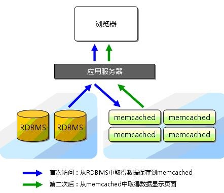
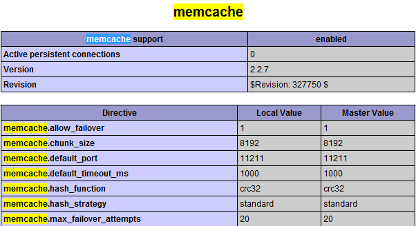

Memcached是一个自由开源的，高性能，分布式内存对象缓存系统。
Memcached是以LiveJournal旗下Danga Interactive公司的Brad Fitzpatric为首开发的一款软件。现在已成为mixi、hatena、Facebook、Vox、LiveJournal等众多服务中提高Web应用扩展性的重要因素。
Memcached是一种基于内存的key-value存储，用来存储小块的任意数据（字符串、对象）。这些数据可以是数据库调用、API调用或者是页面渲染的结果。
Memcached简洁而强大。它的简洁设计便于快速开发，减轻开发难度，解决了大数据量缓存的很多问题。它的API兼容大部分流行的开发语言。
本质上，它是一个简洁的key-value存储系统。
一般的使用目的是，通过缓存数据库查询结果，减少数据库访问次数，以提高动态Web应用的速度、提高可扩展性。

Memcached 官网：https://memcached.org/。
memcached作为高速运行的分布式缓存服务器，具有以下的特点。
许多语言都实现了连接memcached的客户端，其中以Perl、PHP为主。仅仅memcached网站上列出的有：
Memcached 支持许多平台：Linux、FreeBSD、Solaris、Mac OS，也可以安装在Windows上。
Linux系统安装memcached，首先要先安装libevent库。
sudo apt-get install libevent ibevent-dev 自动下载安装（Ubuntu/Debian） yum install libevent libevent-devel 自动下载安装（Redhat/Fedora/Centos）
Ubuntu/Debian
sudo apt-get install memcached
Redhat/Fedora/Centos
yum install memcached
FreeBSD
portmaster databases/memcached
安装完后可以使用 whereis 查看命令的路径：
whereis memcached
发现安装位置在 /usr/bin/memcached。
从其官方网站（http://memcached.org）下载memcached最新版本。
wget http://memcached.org/latest 下载最新版本 tar -zxvf memcached-1.x.x.tar.gz 解压源码 cd memcached-1.x.x 进入目录 ./configure --prefix=/usr/local/memcached 配置 make && make test 编译 sudo make install 安装
Memcached命令的运行：
$ /usr/local/memcached/bin/memcached -h 命令帮助
注意：如果使用自动安装 memcached 命令位于 /usr/local/bin/memcached。
启动选项：
从终端输入以下命令，启动memcached:
/usr/local/memcached/bin/memcached -p 11211 -m 64m -vv slab class 1: chunk size 88 perslab 11915 slab class 2: chunk size 112 perslab 9362 slab class 3: chunk size 144 perslab 7281 中间省略 slab class 38: chunk size 391224 perslab 2 slab class 39: chunk size 489032 perslab 2 <23 server listening <24 send buffer was 110592, now 268435456 <24 server listening (udp) <24 server listening (udp) <24 server listening (udp) <24 server listening (udp)
这里显示了调试信息。这样就在前台启动了memcached，监听TCP端口11211，最大内存使用量为64M。调试信息的内容大部分是关于存储的信息。
# /usr/local/memcached/bin/memcached -p 11211 -m 64m -d
或者
/usr/local/memcached/bin/memcached -d -m 64M -u root -l 192.168.0.200 -p 11211 -c 256 -P /tmp/memcached.pid
官网上并未提供 Memcached 的 Windows 平台安装包，我们可以使用以下链接来下载，你需要根据自己的系统平台及需要的版本号点击对应的链接下载即可：
在 1.4.5 版本以前 memcached 可以作为一个服务安装，而在 1.4.5 及之后的版本删除了该功能。因此我们以下介绍两个不同版本 1.4.4 及 1.4.5的不同安装方法：
1、解压下载的安装包到指定目录。
2、在 1.4.5 版本以前 memcached 可以作为一个服务安装，使用管理员权限运行以下命令：
c:\memcached\memcached.exe -d install
注意：你需要使用真实的路径替代 c:\memcached\memcached.exe。
3、然后我们可以使用以下命令来启动和关闭 memcached 服务：
c:\memcached\memcached.exe -d start c:\memcached\memcached.exe -d stop
4、如果要修改 memcached 的配置项, 可以在命令行中执行 regedit.exe 命令打开注册表并找到 "HKEY_LOCAL_MACHINE\SYSTEM\CurrentControlSet\Services\memcached" 来进行修改。
如果要提供 memcached 使用的缓存配置 可以修改 ImagePath 为:
"c:\memcached\memcached.exe" -d runservice -m 512
-m 512 意思是设置 memcached 最大的缓存配置为512M。
此外我们还可以通过使用 "c:\memcached\memcached.exe -h" 命令查看更多的参数配置。
5、如果我们需要卸载 memcached ，可以使用以下命令：
c:\memcached\memcached.exe -d uninstall
1、解压下载的安装包到指定目录。
2、在 memcached1.4.5 版本之后，memcached 不能作为服务来运行，需要使用任务计划中来开启一个普通的进程，在 window 启动时设置 memcached自动执行。
我们使用管理员身份执行以下命令将 memcached 添加来任务计划表中：
schtasks /create /sc onstart /tn memcached /tr "'c:\memcached\memcached.exe' -m 512"
注意：你需要使用真实的路径替代 c:\memcached\memcached.exe。
注意：-m 512 意思是设置 memcached 最大的缓存配置为512M。
注意：我们可以通过使用 "c:\memcached\memcached.exe -h" 命令查看更多的参数配置。
3、如果需要删除 memcached 的任务计划可以执行以下命令：
schtasks /delete /tn memcached
我们可以通过 telnet 命令并指定主机ip和端口来连接 Memcached 服务。
telnet HOST PORT
命令中的 HOST 和 PORT 为运行 Memcached 服务的 IP 和 端口。
以下实例演示了如何连接到 Memcached 服务并执行简单的 set 和 get 命令。
本实例的 Memcached 服务运行的主机为 127.0.0.1（本机） 、端口为 11211。
telnet 127.0.0.1 11211 Trying 127.0.0.1... Connected to 127.0.0.1. Escape character is '^]'. set foo 0 0 3 保存命令 bar 数据 STORED 结果 get foo 取得命令 VALUE foo 0 3 数据 bar 数据 END 结束行 quit 退出
Memcached set 命令用于将 value(数据值) 存储在指定的 key(键) 中。
如果set的key已经存在，该命令可以更新该key所对应的原来的数据，也就是实现更新的作用。
set 命令的基本语法格式如下：
set key flags exptime bytes [noreply] value
参数说明如下：
以下实例中我们设置：
set runoob 0 900 9 memcached STORED get runoob VALUE runoob 0 9 memcached END
如果数据设置成功，则输出：
STORED
输出信息说明：
Memcached add 命令用于将 value(数据值) 存储在指定的 key(键) 中。
如果 add 的 key 已经存在，则不会更新数据(过期的 key 会更新)，之前的值将仍然保持相同，并且您将获得响应 NOT_STORED。
add 命令的基本语法格式如下：
add key flags exptime bytes [noreply] value
参数说明如下：
以下实例中我们设置：
add new_key 0 900 10 data_value STORED get new_key VALUE new_key 0 10 data_value END
如果数据添加成功，则输出：
STORED
输出信息说明：
Memcached replace 命令用于替换已存在的 key(键) 的 value(数据值)。
如果 key 不存在，则替换失败，并且您将获得响应 NOT_STORED。
replace 命令的基本语法格式如下：
replace key flags exptime bytes [noreply] value
参数说明如下：
以下实例中我们设置：
以下实例中我们使用的键位 'mykey' 并存储对应的值 data_value。执行后我们替换相同的 key 的值为 'some_other_value'。
add mykey 0 900 10 data_value STORED get mykey VALUE mykey 0 10 data_value END replace mykey 0 900 16 some_other_value get mykey VALUE mykey 0 16 some_other_value END
如果数据添加成功，则输出：
STORED
输出信息说明：
Memcached append 命令用于向已存在 key(键) 的 value(数据值) 后面追加数据 。
append 命令的基本语法格式如下：
append key flags exptime bytes [noreply] value
参数说明如下：
实例如下：
set runoob 0 900 9 memcached STORED get runoob VALUE runoob 0 9 memcached END append runoob 0 900 5 redis STORED get runoob VALUE runoob 0 14 memcachedredis END
如果数据添加成功，则输出：
STORED
输出信息说明：
Memcached prepend 命令用于向已存在 key(键) 的 value(数据值) 前面追加数据 。
prepend 命令的基本语法格式如下：
prepend key flags exptime bytes [noreply] value
参数说明如下：
实例如下：
set runoob 0 900 9 memcached STORED get runoob VALUE runoob 0 9 memcached END prepend runoob 0 900 5 redis STORED get runoob VALUE runoob 0 14 redismemcached END
如果数据添加成功，则输出：
STORED
输出信息说明：
Memcached CAS（Check-And-Set 或 Compare-And-Swap） 命令用于执行一个"检查并设置"的操作
它仅在当前客户端最后一次取值后，该key 对应的值没有被其他客户端修改的情况下， 才能够将值写入。
检查是通过cas_token参数进行的， 这个参数是Memcach指定给已经存在的元素的一个唯一的64位值。
CAS 命令的基本语法格式如下：
cas key flags exptime bytes unique_cas_token [noreply] value
参数说明如下：
要在 Memcached 上使用 CAS 命令，你需要从 Memcached 服务商通过 gets 命令获取令牌（token）。
gets 命令的功能类似于基本的 get 命令。两个命令之间的差异在于，gets 返回的信息稍微多一些：64 位的整型值非常像名称/值对的 "版本" 标识符。
实例步骤如下：
cas tp 0 900 9 ERROR <− 缺少 token cas tp 0 900 9 2 memcached NOT_FOUND <− 键 tp 不存在 set tp 0 900 9 memcached STORED gets tp VALUE tp 0 9 1 memcached END cas tp 0 900 5 1 redis STORED get tp VALUE tp 0 5 redis END
如果数据添加成功，则输出：
STORED
输出信息说明：
Memcached get 命令获取存储在 key(键) 中的 value(数据值) ，如果 key 不存在，则返回空。
get 命令的基本语法格式如下：
get key
多个 key 使用空格隔开，如下:
get key1 key2 key3
参数说明如下：
在以下实例中，我们使用 runoob 作为 key，过期时间设置为 900 秒。
set runoob 0 900 9 memcached STORED get runoob VALUE runoob 0 9 memcached END
Memcached gets 命令获取带有 CAS 令牌存 的 value(数据值) ，如果 key 不存在，则返回空。
gets 命令的基本语法格式如下：
gets key
多个 key 使用空格隔开，如下:
gets key1 key2 key3
参数说明如下：
在以下实例中，我们使用 runoob 作为 key，过期时间设置为 900 秒。
set runoob 0 900 9 memcached STORED gets runoob VALUE runoob 0 9 1 memcached END
在 使用 gets 命令的输出结果中，在最后一列的数字 1 代表了 key 为 runoob 的 CAS 令牌。
Memcached delete 命令用于删除已存在的 key(键)。
delete 命令的基本语法格式如下：
delete key [noreply]
参数说明如下：
在以下实例中，我们使用 runoob 作为 key，过期时间设置为 900 秒。之后我们使用 delete 命令删除该 key。
set runoob 0 900 9 memcached STORED get runoob VALUE runoob 0 9 memcached END delete runoob DELETED get runoob END delete runoob NOT_FOUND
输出信息说明：
Memcached incr 与 decr 命令用于对已存在的 key(键) 的数字值进行自增或自减操作。
incr 与 decr 命令操作的数据必须是十进制的32位无符号整数。
如果 key 不存在返回 NOT_FOUND，如果键的值不为数字，则返回 CLIENT_ERROR，其他错误返回 ERROR。
incr 命令的基本语法格式如下：
incr key increment_value
参数说明如下：
在以下实例中，我们使用 visitors 作为 key，初始值为 10，之后进行加 5 操作。
set visitors 0 900 2 10 STORED get visitors VALUE visitors 0 2 10 END incr visitors 5 15 get visitors VALUE visitors 0 2 15 END
输出信息说明：
decr 命令的基本语法格式如下：
decr key decrement_value
参数说明如下：
set visitors 0 900 2 10 STORED get visitors VALUE visitors 0 2 10 END decr visitors 5 5 get visitors VALUE visitors 0 1 5 END
在以下实例中，我们使用 visitors 作为 key，初始值为 10，之后进行减 5 操作。
输出信息说明：
Memcached stats 命令用于返回统计信息例如 PID(进程号)、版本号、连接数等。
stats 命令的基本语法格式如下：
stats
在以下实例中，我们使用了 stats 命令来输出 Memcached 服务信息。
stats STAT pid 1162 STAT uptime 5022 STAT time 1415208270 STAT version 1.4.14 STAT libevent 2.0.19-stable STAT pointer_size 64 STAT rusage_user 0.096006 STAT rusage_system 0.152009 STAT curr_connections 5 STAT total_connections 6 STAT connection_structures 6 STAT reserved_fds 20 STAT cmd_get 6 STAT cmd_set 4 STAT cmd_flush 0 STAT cmd_touch 0 STAT get_hits 4 STAT get_misses 2 STAT delete_misses 1 STAT delete_hits 1 STAT incr_misses 2 STAT incr_hits 1 STAT decr_misses 0 STAT decr_hits 1 STAT cas_misses 0 STAT cas_hits 0 STAT cas_badval 0 STAT touch_hits 0 STAT touch_misses 0 STAT auth_cmds 0 STAT auth_errors 0 STAT bytes_read 262 STAT bytes_written 313 STAT limit_maxbytes 67108864 STAT accepting_conns 1 STAT listen_disabled_num 0 STAT threads 4 STAT conn_yields 0 STAT hash_power_level 16 STAT hash_bytes 524288 STAT hash_is_expanding 0 STAT expired_unfetched 1 STAT evicted_unfetched 0 STAT bytes 142 STAT curr_items 2 STAT total_items 6 STAT evictions 0 STAT reclaimed 1 END
这里显示了很多状态信息，下边详细解释每个状态项：
Memcached stats items 命令用于显示各个 slab 中 item 的数目和存储时长(最后一次访问距离现在的秒数)。
stats items 命令的基本语法格式如下：
stats items
stats items STAT items:1:number 1 STAT items:1:age 7 STAT items:1:evicted 0 STAT items:1:evicted_nonzero 0 STAT items:1:evicted_time 0 STAT items:1:outofmemory 0 STAT items:1:tailrepairs 0 STAT items:1:reclaimed 0 STAT items:1:expired_unfetched 0 STAT items:1:evicted_unfetched 0 END
Memcached stats slabs 命令用于显示各个slab的信息，包括chunk的大小、数目、使用情况等。
stats slabs 命令的基本语法格式如下：
stats slabs
stats slabs STAT 1:chunk_size 96 STAT 1:chunks_per_page 10922 STAT 1:total_pages 1 STAT 1:total_chunks 10922 STAT 1:used_chunks 1 STAT 1:free_chunks 10921 STAT 1:free_chunks_end 0 STAT 1:mem_requested 71 STAT 1:get_hits 0 STAT 1:cmd_set 1 STAT 1:delete_hits 0 STAT 1:incr_hits 0 STAT 1:decr_hits 0 STAT 1:cas_hits 0 STAT 1:cas_badval 0 STAT 1:touch_hits 0 STAT active_slabs 1 STAT total_malloced 1048512 END
Memcached stats sizes 命令用于显示所有item的大小和个数。
该信息返回两列，第一列是 item 的大小，第二列是 item 的个数。
stats sizes 命令的基本语法格式如下：
stats sizes
stats sizes STAT 96 1 END
Memcached flush_all 命令用于清理缓存中的所有 key=>value(键=>值) 对。
该命令提供了一个可选参数 time，用于在指定的时间后执行清理缓存操作。
flush_all 命令的基本语法格式如下：
flush_all [time] [noreply]
清理缓存:
set runoob 0 900 9 memcached STORED get runoob VALUE runoob 0 9 memcached END flush_all OK get runoob END
使用 Java 程序连接 Memcached，需要在你的 classpath 中添加 Memcached jar 包。
本站 jar 包下载地址：spymemcached-2.10.3.jar。
Google Code jar 包下载地址：spymemcached-2.10.3.jar（需要科学上网）。
以下程序假定 Memcached 服务的主机为 127.0.0.1，端口为 11211。
Java 连接 Memcached
该程序中我们使用 InetSocketAddress 连接 IP 为 127.0.0.1 端口 为 11211 的 memcached 服务。
执行以上代码，如果连接成功会输出以下信息：
Connection to server successful.
以下使用 java.util.concurrent.Future 来存储数据
执行程序，输出结果为：
Connection to server successful. set status:true runoob value in cache - Free Education
在前面章节中我们已经介绍了如何安装 Memcached 服务，接下来我们为大家介绍 PHP 如何使用 Memcached 服务。
PHP Memcache 扩展包下载地址：http://pecl.php.net/package/memcache，你可以下载最新稳定包(stable)。
wget http://pecl.php.net/get/memcache-2.2.7.tgz tar -zxvf memcache-2.2.7.tgz cd memcache-2.2.7 /usr/local/php/bin/phpize ./configure --with-php-config=/usr/local/php/bin/php-config make && make install
注意：/usr/local/php/ 为php的安装路径，需要根据你安装的实际目录调整。
安装成功后会显示你的memcache.so扩展的位置，比如我的：
Installing shared extensions: /usr/local/php/lib/php/extensions/no-debug-non-zts-20090626/
最后我们需要把这个扩展添加到php中，打开你的php.ini文件在最后添加以下内容：
[Memcache] extension_dir = "/usr/local/php/lib/php/extensions/no-debug-non-zts-20090626/" extension = memcache.so
添加完后 重新启动php,我使用的是nginx+php-fpm进程所以命令如下：
kill -USR2 `cat /usr/local/php/var/run/php-fpm.pid`
如果是apache的使用以下命令:
/usr/local/apache2/bin/apachectl restart
检查安装结果
/usr/local/php/bin/php -m | grep memcache
安装成功会输出：memcache。
或者通过浏览器访问 phpinfo() 函数来查看，如下图：

<?php
$memcache = new Memcache; //创建一个memcache对象
$memcache->connect('localhost', 11211) or die ("Could not connect"); //连接Memcached服务器
$memcache->set('key', 'test'); //设置一个变量到内存中，名称是key 值是test
$get_value = $memcache->get('key'); //从内存中取出key的值
echo $get_value;
?>
更多 PHP 操作 Memcached 请参阅： http://php.net/manual/zh/book.memcache.php